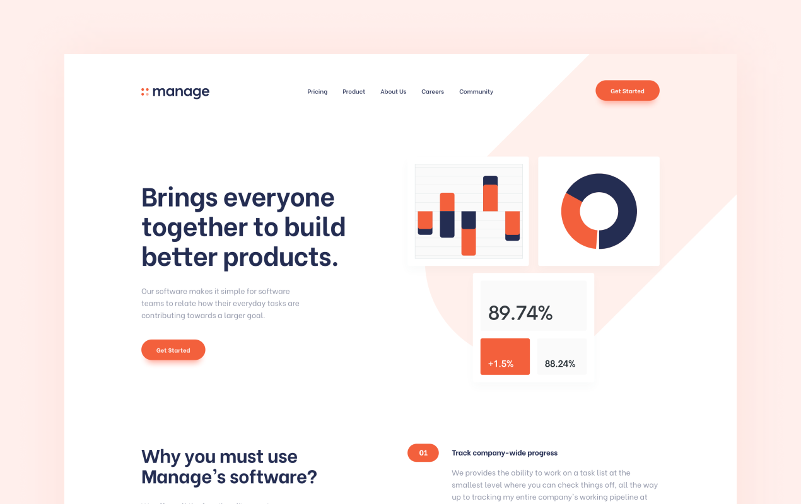
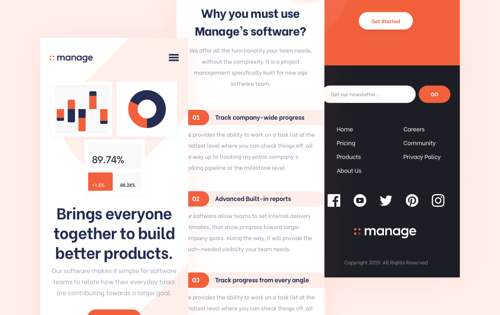

Manage
This project required me to build a fully responsive landing page to the designs provided. I used HTML5, along with CSS Grid and JavaScript for the areas that required interactivity, such as the testimonial slider.
Interaction Design / Front End Development
HTML / CSS / JS
VISIT WEBSITEProject Background
This project was a front-end challenge from Frontend Mentor. It’s a platform that enables you to practice building websites to a design and project brief. Each challenge includes mobile and desktop designs to show how the website should look at different screen sizes. Creating these projects has helped me refine my workflow and solve real-world coding problems. I’ve learned something new with each project, helping me to improve and adapt my style.
Static Previews
 Fylo
Previous Project
Bookmark
Next Project